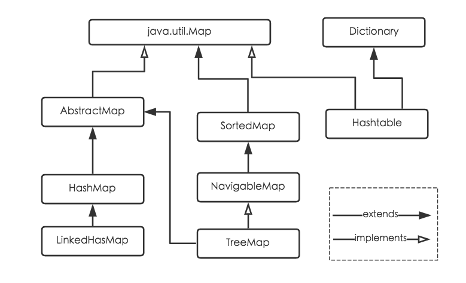

HashMap是Java程序员使用频率最高的用于映射(键值对)处理的数据类型。随着JDK（Java Developmet Kit）版本的更新，JDK1.8对HashMap底层的实现进行了优化，例如引入红黑树的数据结构和扩容的优化等。
本章从Hash开始，大概的介绍一下HashMap。

简介
上图是Java的容器类图，我们再看详细一点的图，Java为数据结构中的映射定义了一个接口java.util.Map，此接口主要有四个常用的实现类，分别是HashMap、Hashtable、LinkedHashMap和TreeMap，类继承关系如下图所示：

下面针对各个实现类的特点做一些说明：
(1) HashMap：它根据键的hashCode值存储数据，大多数情况下可以直接定位到它的值，因而具有很快的访问速度，但遍历顺序却是不确定的。 HashMap最多只允许一条记录的键为null，允许多条记录的值为null。HashMap非线程安全，即任一时刻可以有多个线程同时写HashMap，可能会导致数据的不一致。如果需要满足线程安全，可以用 Collections的synchronizedMap方法使HashMap具有线程安全的能力，或者使用ConcurrentHashMap。
(2) Hashtable：Hashtable是遗留类，很多映射的常用功能与HashMap类似，不同的是它承自Dictionary类，并且是线程安全的，任一时间只有一个线程能写Hashtable，并发性不如ConcurrentHashMap，因为ConcurrentHashMap引入了分段锁。Hashtable不建议在新代码中使用，不需要线程安全的场合可以用HashMap替换，需要线程安全的场合可以用ConcurrentHashMap替换。
(3) LinkedHashMap：LinkedHashMap是HashMap的一个子类，保存了记录的插入顺序，在用Iterator遍历LinkedHashMap时，先得到的记录肯定是先插入的，也可以在构造时带参数，按照访问次序排序。
(4) TreeMap：TreeMap实现SortedMap接口，能够把它保存的记录根据键排序，默认是按键值的升序排序，也可以指定排序的比较器，当用Iterator遍历TreeMap时，得到的记录是排过序的。如果使用排序的映射，建议使用TreeMap。在使用TreeMap时，key必须实现Comparable接口或者在构造TreeMap传入自定义的Comparator，否则会在运行时抛出java.lang.ClassCastException类型的异常。
对于上述四种Map类型的类，要求映射中的key是不可变对象。不可变对象是该对象在创建后它的哈希值不会被改变。如果对象的哈希值发生变化，Map对象很可能就定位不到映射的位置了。
通过上面的比较，我们知道了HashMap是Java的Map家族中一个普通成员，鉴于它可以满足大多数场景的使用条件，所以是使用频度最高的一个。下文我们主要结合源码，从存储结构、常用方法分析、扩容以及安全性等方面深入讲解HashMap的工作原理。
Hash
首先在讲HashMap之前，我们先了解一下什么是Hash。
什么是Hash？
Hash（哈希），又称“散列”。
散列（hash）英文原意是“混杂”、“拼凑”、“重新表述”的意思。
在某种程度上，散列是与排序相反的一种操作，排序是将集合中的元素按照某种方式比如字典顺序排列在一起，而散列通过计算哈希值，打破元素之间原有的关系，使集合中的元素按照散列函数的分类进行排列。
在介绍一些集合时，我们总强调需要重写某个类的 equlas() 方法和 hashCode() 方法，确保唯一性。这里的 hashCode() 表示的是对当前对象的唯一标示。计算 hashCode 的过程就称作 哈希。
Hash(散列)函数
hash（散列、杂凑）函数，是将任意长度的数据映射到有限长度的域上。直观解释起来，就是对一串数据m进行杂糅，输出另一段固定长度的数据h，作为这段数据的特征（指纹）。也就是说，无论数据块m有多大，其输出值h为固定长度。到底是什么原理？将m分成固定长度（如128位），依次进行hash运算，然后用不同的方法迭代即可（如前一块的hash值与后一块的hash值进行异或）。如果不够128位怎么办？用0补全或者用1补全随意，算法中约定好就可以了。
Hash函数的构造
构造哈希函数的目标是使得到的哈希地址尽可能均匀地分布在n个连续内存单元地址上，同时使计算过程尽可能简单以达到尽可能高的时间效率。根据关键字的结构和分布的不同，可构造出许多不同的哈希函数。Java中的超级父类Object中就有得到哈希值的方法，以下是截取Java api 1.6中Object类说明的一段
public int hashCode()返回该对象的哈希码值。支持此方法是为了提高哈希表（例如 java.util.Hashtable 提供的哈希表）的性能。 hashCode 的常规协定是：
- 在 Java 应用程序执行期间，在对同一对象多次调用 hashCode 方法时，必须一致地返回相同的整数，前提是将对象进行 equals 比较时所用的信息没有被修改。从某一应用程序的一次执行到同一应用程序的另一次执行，该整数无需保持一致。
- 如果根据 equals(Object) 方法，两个对象是相等的，那么对这两个对象中的每个对象调用 hashCode 方法都必须生成相同的整数结果。
- 如果根据 equals(java.lang.Object) 方法，两个对象不相等，那么对这两个对象中的任一对象上调用 hashCode 方法不 要求一定生成不同的整数结果。但是，程序员应该意识到，为不相等的对象生成不同整数结果可以提高哈希表的性能。
- 实际上，由 Object 类定义的 hashCode 方法确实会针对不同的对象返回不同的整数。（这一般是通过将该对象的内部地址转换成一个整数来实现的，但是 JavaTM 编程语言不需要这种实现技巧。）
下面具体介绍构造方法
直接地址法
直接以关键字k或者k加上某个常数（k+c）作为哈希地址，即：h(k) = k + c这种哈希函数计算简单。当关键字基本连续时用这种方法十分方便，若关键字不连续的话将造成内存单元大量浪费。
数字分析法
提取关键字中取值比较均匀的数字作为哈希地址。它适用于关键字都已知的情况，并需要对关键字中每一位的取值进行分析。比如有80个记录，关键字是一个8位的十进制整数:m1m2m3…m7m8,如哈希表长度为100，则哈希表地址空间为0-99。进过分析各关键字m1m2m3取值比较集中（多个关键字重复或相似）就不宜作为哈希地址；相反，门m4m5m7m8取值比较分散，则可根据需要选取若干位作为哈希地址，即：h(k) = m4m5m7 etc.
除留余数法
用关键字k除以某个不大于哈希表长度m的数p，将所得余数作为哈希表地址。即：h(k) = k mod p;这种方法计算比较简单，适用范围广，是最经常使用的一种哈希函数。这种方法的关键是选好p，使得元素集合中每一个关键字通过该函数转换后映射到哈希表范围的任意地址上的概率相等，从而尽可能减少冲突的可能性。
分段叠加法
按照哈希表地址位数将关键字分成位数相等的几部分，其中最后一部分可以比较短。然后将这几部分相加，舍弃最高进位后的结果就是该关键字的哈希地址。分段叠加又可以分成折叠法和位移法两种。位移法是将分割后的每部分低位对齐相加；折叠法是将奇数段正序偶数段逆序然后相加。
平方取中法
如果关键字各个部分分布都不均匀的话，可以先求出它的平方值，然后按照需求取中间的几位作为哈希地址。因为平方值的中间部分跟关键字的每一位都有相关性，所以产生随机数的概率比较高。
伪随机数法
插个嘴，最近看到这样一句话：计算机中没有正真的随机数，都是伪随机数，得到随机数的方法都是程序员写的代码，当然这里面的细节我就不是很清楚了。伪随机数法是指采用一个伪随机数当作哈希函数，即h(k) = random(k);
在判断性能时通常要考虑4个因素：
- 计算哈希函数所需要的时间。
- 关键字的长度
- 关键字分布情况
- 查找频率
性能好的哈希函数能减少冲突，通常不可能完全避免冲突，所以解决冲突也是哈希表的另一个关键问题。解决冲突在创建哈希表和查找时应该保持一致。
Hash冲突
开放地址法
在开法定址法中，哈希表中的空闲单元（记为d）不仅允许哈希地址为d的同义词关键字使用，而且也允许发生冲突的其他关键字使用。开法定址法的名字就是来自于此方法的哈希表空闲单元既向同义词开放，也向发生冲突的非同义词关键字开放。谁先找到这个单元谁先占用，这和哈希表的元素排列次序有关。开放定址法以发生冲突的地址d作为自变量来得到一个新的空闲单元，下面介绍常用的几种。（d加下标i记为d[i]，小i打不出来==）
线性探查法
发生冲突时，线性遍历后续单元直到找到空闲单元。即d[i] = (d[i-1] + 1) mod m线性探查容易产生堆积的问题。因为若是出现了若干个同意词会堆积在第一个同义词的地址单元附近。
平方探查法
发生冲突时，用平方探查法的探查序列为d[i] + 1²，d[i] + 2², d[i] + 3²…直到找到空闲单元。平方探查法是一种比较好的处理冲突的方法，可以避免堆积问题。它的缺点是不能探查到哈希表上的所有单元，不过至少也能探查到一半单元。
链地址法（拉链法）
链地址法的思想是将哈希表的每个单元作为链表的头结点，所有哈希地址为i的元素构成一个同义词链表。即发生冲突时就把该关键字链在以该单元为头结点的链表的尾部。（图得靠自己脑补）链地址法适用于经常插入删除的情况，其中查找、插入和删除操作主要在同义词链中进行。
再哈希法
在构造函数时同时构造多个不同的哈希函数。当哈希地址发生冲突用其他的函数计算另一个哈希函数地址，直到冲突不再产生为止。这种方法不易产生聚集，但增加了计算时间。
建立公共溢出区
建立公共溢出区的基本思想是将哈希表分为基本表和溢出表2部分，发生冲突的元素都放入溢出表中。
HashMap
JDK 1.8 以前 HashMap 的实现是 数组+链表，即使哈希函数取得再好，也很难达到元素百分百均匀分布。
当 HashMap 中有大量的元素都存放到同一个桶中时，这个桶下有一条长长的链表，这个时候 HashMap 就相当于一个单链表，假如单链表有 n 个元素，遍历的时间复杂度就是 O(n)，完全失去了它的优势。
针对这种情况，JDK 1.8 中引入了 红黑树（查找时间复杂度为 O(logn)）来优化这个问题。（即当一条链上的个数大于8的时候会转换成红黑树，具体为什么是8，下一章会解释）
HashMap的结构

从源码可知，HashMap类中有一个非常重要的字段，就是 Node[] table，即哈希桶数组，明显它是一个Node的数组。1
2
3
4
5
6
7
8
9
10
11
12
13
14static class Node<K,V> implements Map.Entry<K,V> {
final int hash; //用来定位数组索引位置
final K key;
V value;
Node<K,V> next; //链表的下一个node
Node(int hash, K key, V value, Node<K,V> next) { ... }
public final K getKey(){ ... }
public final V getValue() { ... }
public final String toString() { ... }
public final int hashCode() { ... }
public final V setValue(V newValue) { ... }
public final boolean equals(Object o) { ... }
}
Node是HashMap的一个内部类，实现了Map.Entry接口，本质是就是一个映射(键值对)。上图中的每个黑色圆点就是一个Node对象。